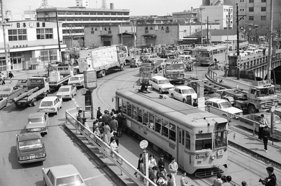
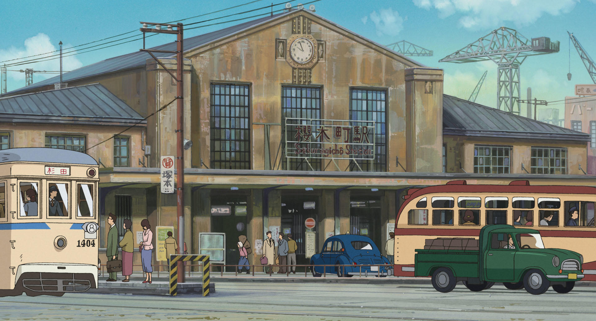
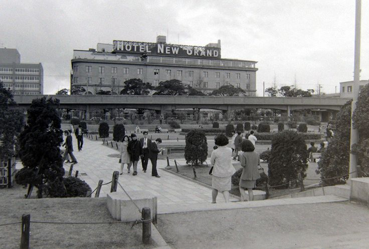
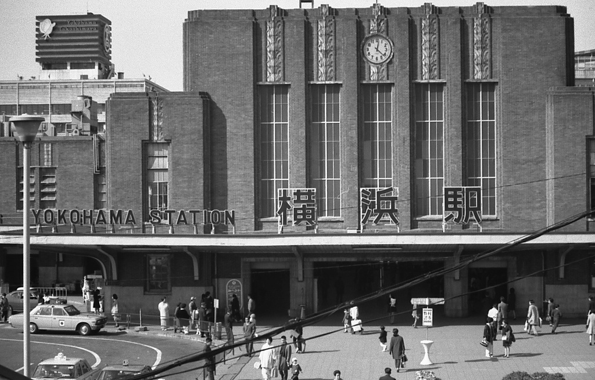
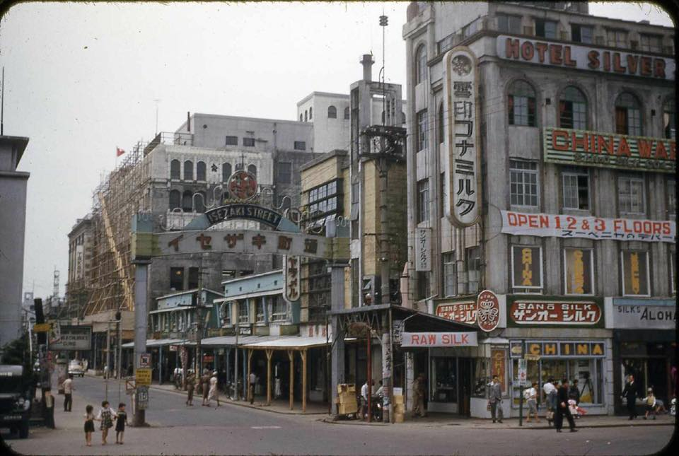
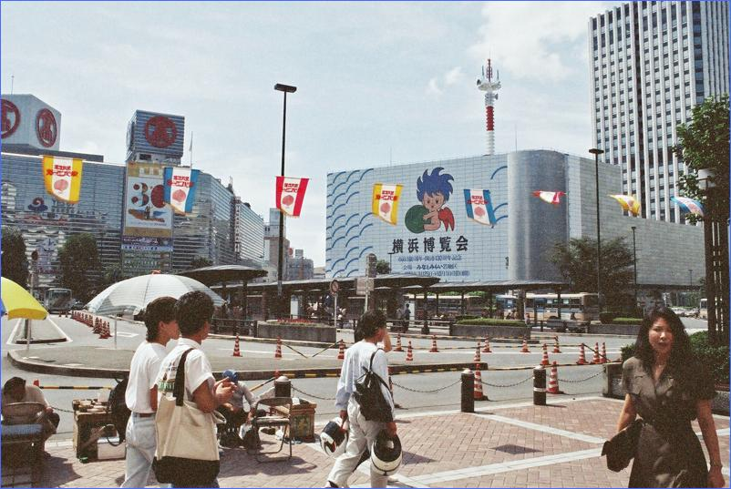
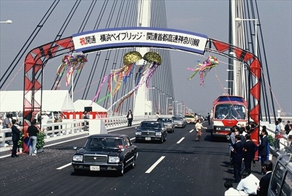
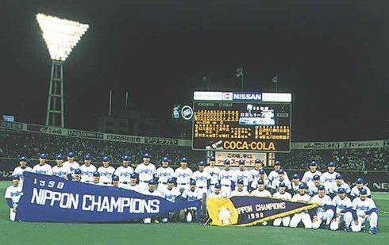
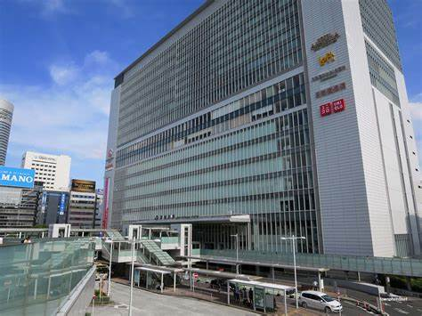

質問10個
- 出身はどちらですか
- 神奈川ならどこら辺
- 他県ならいつこちらに
- 91年以前から住んでいる方は日本の好景気を象徴するものは横浜にありましたか
- どうですここは穏やかであったり住みやすいですか
- 西区で昔から現在までで一番変わったと思われる場所はどこですか。
- 変わっていく町をみてどう感じていました。すごいや悲しいなど
- 思い出の場所はありますか
- 73年以前から住んでいる方には横浜の空気はどうでした汚れていましたか
- 遊んだり出かけたりする場所はどこでしたか









